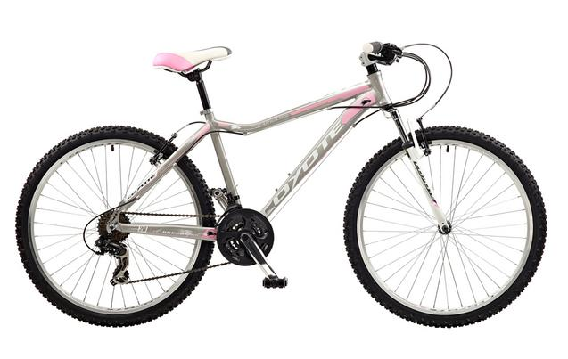

Coyote Clearwater Womens 26in 18 Speed Alloy Mtb Mountain Bike

The Coyote Clearwater Womens 26in 18 Speed Alloy MTB Mountain Bike
is part of the Coyote mountain bike range, a breed apart, these bikes
have been developed to combine both product performance, stylish designs
and exceptional value. The Clearwater comes with a unique ladies lightweight
aluminium 26 frame and Zoom premium branded front suspension with alloy double
wall 36 hole black rims with front quick release hub. Alloy V brakes with
Shimano 3-finger levers for strong stopping power. Shimano 21 speed gears
with EZ-Fire shifters offer reliable gear changing.
Frame: Alloy
Cassette/Freewheel: 14-28 Tooth Freewheel
Brakes: Alloy V
Wheels: 26"" Alloy 36 Hole Black Rims
Colour: Grey
Frame Sizes: 15in, 17in, 19in